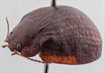
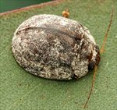
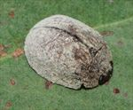
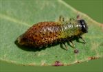
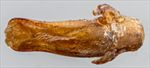
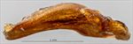
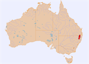

Click on images to enlarge
{kind=link}

Female, Boonoo Boonoo, N.E. New South Wales
{kind=link}

Male, Thalgarrah, N.E. New South Wales
{kind=link}

Female, Boonoo Boonoo, N.E. New South Wales
{kind=link}

4th instar larva, Boonoo Boonoo, N.E. New South Wales
{kind=link}

Aedeagus, dorsal view (Gibraltar Range, N.E. New South Wales)
{kind=link}

Aedeagus, lateral view (Gibraltar Range, N.E. New South Wales)
{kind=link}

Distribution
Name
Trachymela sp. Ta69
Reference specimen
2000-544a, Gibraltar Range, NE New South Wales.
Adult Description
Length: ♂ 7.2–8.0 mm (n=3), ♀ 8.1–9.3 mm (n=26).
Colouration:
- Head: uniformly mid-brown with black-tipped mandibles, a darker brown, rarely black, patch sometimes present at far rear centre; antennomeres 1–3 straw-brown, 3–4 slightly darker, 6–11 uniformly brown of a similar or slightly darker shade than antennomere 4.
- Pronotum: most often uniformly brown, concolorous with head, sometimes with very vaguely defined patches of a marginally darker shade in the area behind eyes, less often with a large dark (even black) patch on each side of centre line, near edge of disc.
- Scutellum: brown, concolorous with pronotum, usually broadly edged in a slightly darker shade of brown, rarely the darker shade present throughout.
- Elytra: brown, concolorous with pronotum, most of the punctures on discal area broadly outlined in fractionally to considerably darker brown with these dark puncture outlines joining to produce uneven longitudinal dark bands frequently joined to adjacent bands, overall appearance being a brown substrate with a crisscross of uneven darker patches; humeral callus usually of the darker brown shade.
- Venter & Legs: venter dark brown, with legs usually at least partially a fractionally lighter shade; posterior half of inner surface of elytral epipleura black, anterior half brown.
- Cuticular Wax: dense and uniformly distributed layer of uniform light-grey to almost white shade.
Morphology:
- Head: punctures moderately large (pd ≈ 1.5–2×ef) and quite evenly and densely distributed, rarely partially obliterated by rugose interstices; antennae long (AL/BL: ♂ 56–59%, ♀ 42–47%), filiform.
- Pronotum: almost evenly curved transversely, with a broad but shallow depression situated behind outside edge of each eye; puncturation clearly impressed, evenly distributed and moderately dense in discal area, becoming much coarser towards lateral margins; much finer punctures mostly absent among larger ones; front margins join lateral margins in a smoothly rounded and usually quite thickened right-angle, with lateral margin curving smoothly and gradually towards rear margin.
- Scutellum: smooth or very slightly wrinkled with puncturation absent.
- Elytra: surface evenly curved, punctures large and distinct and somewhat unevenly distributed with relatively large interstices present (rarely relatively evenly distributed), much smaller punctures scattered sparingly on interstices; surface continuous to very slightly discontinuous under humeral callus; vertical extension of epipleurae considerable (HCE/PW = 0.37–0.41).
- Venter: prosternal process almost parallel-sided, open or lightly closed anteriorly, short setae present at rear of prosternal process, absent from mesoventrite; single seta on anterior and median trochanter; front edge of metaventrite beveled, truncate; inner edge of posterior of epipleura lacking setae.
Male Genitalia (Aedeagus):
- Dimensions: small (LPE/BL = 25–26%).
- Dorsal view: quadrate, widest at junction of basal and central section, sinuate over central region with narrowest point near middle and broadening towards apex before sides converge towards apex in a smooth arc; dorsal surface smoothly curved with faint dorso-median channel usually present, tip barely protruding; ostium transversely triangular.
- Lateral view: almost evenly curved over most of its length with curvature reversing for a short distance at apex, thinning towards apex over 20% of length; tip slightly reflexed, very thin and spout-like.
Immature Stages
- Eggs: brown, laid in batches of up to about 7 side-by-side on surface of leaves.
- Larvae: 4th instar with thoracic segments light-green, black head and legs, and abdominal segments brown; black markings present on prothorax; small black tubercles on thoracic segments, and slightly larger tubercles on abdominal segments.
Similar species
- Ta40: Can be distinguished by the form of the verrucae, which are more compact and more clearly elevated, each with only a single puncture in the centre, as well as the colouration of the inner surface of the epipleura, which are fully dark in Ta40 rather than brown in the anterior half (thus giving the epipleura of Ta69 a semi-transparent appearance in the anterior half).
- Ta41: A closely related species that differs in the presence of a well-defined post-basal impression on the elytra, and in having verrucae that are larger and not obviously placed in linear series.
Notes
- Taxonomy: Ta69 is a relatively uncommon species within the catenata-group. Morphologically, it seems closer to Ta39 (Trachymela echo) and Ta40 than to the group of species that include Ta01 (Trachymela catenata).
- Distribution & Abundance: Ta69 seems to be restricted to high altitude locations on the northern New England Tablelands.
- Host Associations: Recorded from several stringybark species (Eucalyptus section Capillulus), particularly Eucalyptus cameronii (n=5), but also E. caliginosa (1) and unidentified stringybarks (n=13) that are very likely include the former species. There are also records from E. radiata (n=1), E. obliqua (n=1) and an unidentified peppermint (n=1).
- Morphological Variation: Males are considerably smaller than females on average, with the two size distributions barely overlapping. As is the case in most catenata-group species, the apex of the aedeagus is in the form of a slightly reflexed spout whose tip is extremely thin and difficult not to break when dissecting. When broken, the two sides of the aedeagus draw in towards the centre, with the sides of the spout overlapping, thus making the width measurement uncertain.
- Population Structure: The sex ratio is very strongly female-biased, with 90% (all but three) of 29 specimens examined being female (p < 0.001).
Copyright © 2026. All rights reserved.